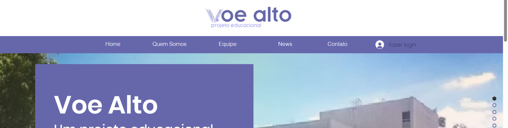
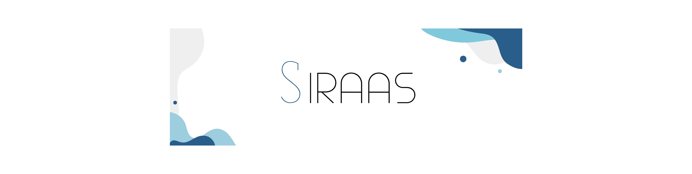

BEM-VINDO!
Sobre mim
Sou a Gabrielle Novaes, tenho 19 anos, nasci e cresci em São José dos Campos e sou estudante de Análise e Desenvolvimento de Sistemas (ADS) na Faculdade de Tecnologia (FATEC).
Estudei no Colégio Embraer durante o meu ensino médio e tive a oportunidade de participar como diretora no projeto voluntário educacional Voe Alto.
Fora do código sou apaixonada pelos trabalhos manuais como artesanatos, crochê e bordados feitos à mão.
Portfólio

Criação da identidade visual do projeto educacional Voe Alto, um projeto educacional desenvolvido por alunos da Escola Embraer com foco em ajudar outros estudantes a ingressarem na instituição. A marca foi pensada para transmitir leveza, inspiração e acessibilidade.
O logotipo traz um símbolo que remete ao voo e à conquista, com uma estrela representando o objetivo alcançado. A paleta em tons de azul e roxo equilibra criatividade e seriedade, enquanto a tipografia Quicksand reforça um visual moderno e amigável. O resultado é uma identidade jovem, clara e alinhada ao propósito do projeto.
Este site foi criado com o objetivo de reunir as principais informações sobre o Voe Alto, um projeto educacional idealizado por alunos do ensino médio da Escola Embraer. A iniciativa busca apoiar estudantes na preparação para o processo seletivo da escola, oferecendo conteúdos e orientações que facilitem sua trajetória. A plataforma foi desenvolvida para apresentar o propósito do projeto de forma clara e acessível.
A identidade visual da Ilumina – Serviços Elétricos foi criada com o objetivo de representar uma marca moderna, confiável e conectada à ideia de energia e inovação. O símbolo une o formato de uma lâmpada com um plugue, sintetizando visualmente o serviço oferecido de forma clara e direta.
As cores em tons vibrantes de amarelo transmitem energia e destaque, enquanto o cinza escuro equilibra o visual com seriedade e profissionalismo. A escolha das tipografias Josefin Sans e Comfortaa reforça a clareza e a acessibilidade da marca, mantendo um visual leve e impactante.
O resultado é uma identidade versátil, com presença forte e aplicação eficiente tanto em meios digitais quanto físicos.
O SIRAAS - Sistema de Registro de Atestados e Avaliação Scrum é resultado do trabalho solicitado pela Faculdade de Tecnologia de São José dos Campos - Professor Jansen Vidal, cujo tema é Sistema web de registro de alunos com atestados médicos e avaliação de equipes ágeis.
O desafio proposto aos alunos foi a criação de um sistema web que permita o cadastro, consulta e gestão de atestados médicos de alunos, garantindo um registro eficiente e seguro dessas informações, evitando perda de dados e tornando o processo mais ágil. O sistema deve permitir também a avaliação de equipes ágeis em projetos de desenvolvimento de software, avaliando os diferentes papéis dentro da equipe Scrum, como o Scrum Master, Product Owner e Time de Desenvolvimento através do método PACER (Produtividade, Autonomia, Colaboração e Entrega de Resultados).